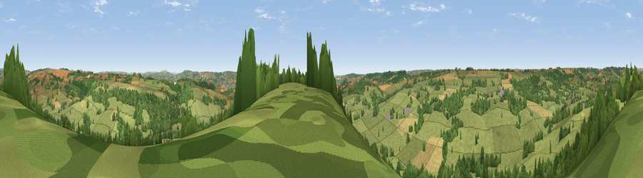

Horner Hill
#14044 in England · top 30% of its area beats it · near DalwoodThe view, rendered

A 360° render of this exact spot computed from the terrain model, tree cover and land cover — summer colours, afternoon light, calibrated against photographs of famous viewpoints. Real trees, hedges and buildings will differ in detail.
The panorama
Grey silhouette: terrain skyline in each direction (720 bearings, Earth curvature and refraction included). Dashed green: skyline with trees (+15 m) and buildings (+8 m) as obstacles. Blue strip: how far the ground is visible on each bearing.
Where the view opens
Wedge length = distance to the farthest visible ground on that bearing (vegetation-aware). Rings at 10, 25 and 50 km.
What fills the view
67% grassland · 25% woodland · 7% cropland
Angular shares of the visible panorama (visual magnitude), not map area. Landscape diversity 0.37 (0–1 Shannon).
Key numbers
More beautiful places nearby
The staircase of upgrades: each row has a higher view potential than everything closer. Driving times are estimates from straight-line distance, calibrated against real road routing — check an actual route before setting out.
| Place | Direction | Drive | Score |
|---|---|---|---|
| Viewpoint near Dalwood | N · 1 km | ~2 min | 64.0 |
| Viewpoint near Membury | NE · 5 km | ~10 min | 65.0 |
| Viewpoint near Axmouth | S · 11 km | ~20 min | 73.4 |
| Viewpoint near Axmouth | SSE · 12 km | ~23 min | 78.5 |
| Lambert's Castle Hill | ESE · 12 km | ~23 min | 78.7 |
| Viewpoint near Uplyme | SSE · 13 km | ~23 min | 80.3 |
| Viewpoint near Axmouth | SSE · 13 km | ~24 min | 82.4 |
| Golden Cap | ESE · 18 km | ~32 min | 88.7 |
50.81336, -3.06486 · source: dobih hill · position refined by local search. Computed location — check access rights before visiting.